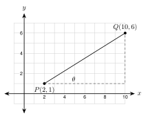

6.4 Solving for an Angle
- Use sin−1, cos−1, and tan−1 on a calculator
- Choose the ratio and find an angle from two sides
- Solve a right triangle completely and check my work
- Find the angle for a roof pitch, ramp, road grade, stairs, or shadow
Warm-Up
1. 0.8391
2. x = 70.8 = 8.75
3. slope = 410 = 0.4
6.4.1Inverse Ratios
- sin−1(0.5) = 30° means: the angle whose sine is 0.5 is 30°.
- The −1 is not an exponent. It means inverse.
- Use degree mode. Check: sin−1(0.5) must give 30.
a. 23.6° b. 75.5° c. 56.3°
a. 17.5° b. 36.9° c. 35.0°
6.4.2Find an Angle from Two Sides
- Label the sides for the angle you want. Pick the ratio that uses the two sides you know.
- Opposite and hypotenuse: sin−1. Adjacent and hypotenuse: cos−1. Opposite and adjacent: tan−1.

Opposite 7, hypotenuse 13: use sine.
sin A = 713
m∠A = sin−1(713) ≈ 32.6°
Opposite 9, adjacent 12: use tangent.
tan A = 912 = 0.75
m∠A = tan−1(0.75) ≈ 36.9°
Adjacent 8, hypotenuse 11: use cosine.
cos A = 811
m∠A = cos−1(811) ≈ 43.3°
a. tan−1(58) ≈ 32.0°
b. cos−1(1517) ≈ 28.1°
6.4.3Solve a Right Triangle
- To solve a triangle, find every missing side and every missing angle.
- Sides: the Pythagorean theorem or trig. Angles: inverse trig, then 90° − the other acute angle.
- Check with a second method.
c = 102 + 72 = 149 ≈ 12.2
m∠A = tan−1(710) ≈ 35.0°
m∠B = 90° − 35.0° = 55.0°
Check: tan−1(107) ≈ 55.0°
c = 13. tan−1(512) ≈ 22.6° and 90° − 22.6° = 67.4°
6.4.4Angles in the Real World
tanθ = 612 = 0.5
θ = tan−1(0.5) ≈ 26.6°
θ = tan−1(112) ≈ 4.8°

θ = tan−1(711) ≈ 32.5°

θ = tan−1(69.5) ≈ 32.3°
8% = 0.08. θ = tan−1(0.08) ≈ 4.6°

slope = 6 − 110 − 2 = 58
θ = tan−1(58) ≈ 32.0°
tan−1(0.75) ≈ 36.9°
She flipped the fraction. Tangent is opposite over adjacent: tan−1(58) ≈ 32.0°.
1. sin−1, cos−1, and tan−1 give an angle from a ratio. The −1 means inverse.
2. Opposite and hypotenuse: use sine. Adjacent and hypotenuse: use cosine. Opposite and adjacent: use tangent.
3. For a roof pitch of 6/12, the angle is tan−1(612). Rise is opposite and run is adjacent.
4. The two acute angles of a right triangle add to 90°.
Practice
Use a calculator in degree mode. Round to the nearest tenth of a degree.
1. sin−1(0.8) 53.1°
2. cos−1(0.35) 69.5°
3. tan−1(2.4) 67.4°
4. sin−1(37) 25.4°
5. tan−1(1) 45°
6. Solve tanθ = 0.0875. 5.0°
Find the angle A to the nearest tenth of a degree. Say which ratio you use.
7. Opposite side 5, hypotenuse 12. sine: sin−1(512) ≈ 24.6°
8. Adjacent side 6, hypotenuse 10. cosine: cos−1(0.6) ≈ 53.1°
9. Opposite side 11, adjacent side 4. tangent: tan−1(2.75) ≈ 70.0°
10. The legs are 9 and 14. Angle A is opposite the leg of length 9. tangent: tan−1(914) ≈ 32.7°
11. Opposite side 20, hypotenuse 21. sine: sin−1(2021) ≈ 72.2°
12. Adjacent side 7, hypotenuse 25. cosine: cos−1(0.28) ≈ 73.7°
Solve each right triangle. Find every missing side and angle. Round to the nearest tenth.
13. A right triangle has legs 21 and 20 and hypotenuse 29. Angle A is opposite the leg of length 20. Find both acute angles.
tan−1(2021) ≈ 43.6° and 46.4°
14. The hypotenuse is 20 and one leg is 9. Find the other leg and both acute angles.
leg 400−81 ≈ 17.9; angle next to the 9 leg: cos−1(0.45) ≈ 63.3°; other angle 26.7°
15. An acute angle is 41° and the opposite leg is 10. Find the other acute angle, the adjacent leg, and the hypotenuse.
other angle 49°; adjacent 10tan 41° ≈ 11.5; hypotenuse 10sin 41° ≈ 15.2
16. The acute angles of a right triangle measure (2x + 5)° and (3x)°. Find x and both angles.
2x + 5 + 3x = 90, so x = 17. The angles are 39° and 51°.
Lines on the coordinate plane. Round to the nearest tenth of a degree.
17. A line passes through the origin and (8, 3). What angle does it make with the x-axis? tan−1(38) ≈ 20.6°
18. A line passes through (1, 2) and (7, 6). What angle does it make with the x-axis? slope 46; tan−1(23) ≈ 33.7°
Real problems. Draw and label a triangle first. Round to the nearest tenth of a degree.
19. A roof has an 8/12 pitch. Find the roof angle.
tan−1(812) ≈ 33.7°
20. A ramp rises 2 feet over a run of 20 feet. Find the angle with the ground.
tan−1(0.1) ≈ 5.7°
21. A road has a grade of 12%. Find its angle with the horizontal.
tan−1(0.12) ≈ 6.8°
22. A flagpole is 25 feet tall. Its shadow is 40 feet long. Find the angle of the sun above the ground.
tan−1(2540) ≈ 32.0°
23. Each step of a staircase rises 8 inches and runs 9 inches. Find the angle of the stairs.
tan−1(89) ≈ 41.6°
24. A 15-foot ladder reaches 14 feet up a wall. What angle does the ladder make with the ground?
sin−1(1415) ≈ 69.0°
Find the mistake.
25. Hnin writes sin−1(0.6) = 1sin 0.6 ≈ 1.8. Find her mistake. What is the correct answer?
The −1 is not an exponent. sin−1(0.6) is the angle whose sine is 0.6, which is 36.9°.
26. Daniel finds the angle A with opposite side 6 and hypotenuse 10. He writes tan−1(610) ≈ 31.0°. Find his mistake and fix it.
Opposite and hypotenuse mean sine, not tangent. sin−1(0.6) ≈ 36.9°.
Test Practice
A. 31.0°
B. 36.9° ← correct
C. 41.2°
D. 53.1°
A. 36.9°
B. 31.0°
C. 53.1° ← correct
D. 59.0°
Challenge
run 15, rise 9: tan−1(915) ≈ 31.0°; rafter 152 + 92 = 306 ≈ 17.5 ft.
In a right triangle the opposite side is a leg, and a leg is shorter than the hypotenuse. So a sine is never more than 1. No angle has a sine of 1.2.